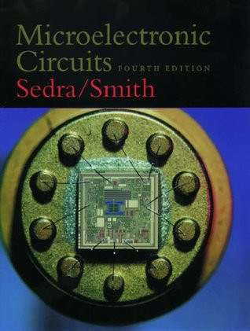
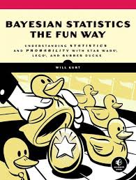

Kleppmann's Architecture Bible: How Modern Databases Manage the Data Deluge
Martin Kleppmann's treatise on data-intensive applications has become the standard reference for engineers who wish to reason seriously about databases, data pipelines, and distributed systems. It opens with a deceptively simple question — what does it mean to handle large amounts of data reliably, efficiently, and at scale? — and proceeds to answer it with characteristic rigour. Replication strategies, consensus algorithms, stream processing, and the subtle nature of consistency guarantees each receive thorough treatment. Few technical books earn genuine authority; this one has, and it is queued accordingly.
☐ Queued for Reading
Hennessy & Patterson: The Architects Who Wrote the Book on Architecture

McKinney's Pandas Manual: Taming Data with Python's Most Powerful Library

Sedra & Smith's Circuit Compendium: Every Engineer's Indispensable Reference on Analogue Design
Few textbooks earn the epithet "bible" without irony; Microelectronic Circuits earns it without equivocation. Sedra and Smith guide the reader through the fundamentals of analogue electronics with a clarity that belies the subject's genuine complexity. Transistor biasing, small-signal models, feedback theory, and frequency response each receive treatment rigorous enough to form the basis of professional practice. The book sits on every practising electronics engineer's shelf within arm's reach — its spine worn smooth through years of consultation. Queued in readiness for the advanced circuit design modules ahead.
☐ Queued for Reading
Mano's Digital Logic Primer: Gates, Flip-Flops, and the Binary World Beneath

Kurt's Bayesian Primer: Probability Theory Made Accessible Without Sacrificing Rigour

Hastie, Tibshirani & Friedman: The Statistical Learning Reference Every Data Scientist Eventually Cites

Kemeny & Snell's Markov Theory: Chains, States, and Steady-State Distributions From First Principles
Linear Programming and Game Theory: The Mathematical Language of Strategic Optimisation

Driver Poses the Fundamental Question: Why Does Mathematics Describe Physical Reality at All?

Axler's Linear Algebra Without Determinants: A Modern Treatment Built on Understanding Rather Than Computation

Hull's Derivatives Standard: The Textbook That Has Defined Quant Finance Education for Three Decades
John Hull's Options, Futures and Other Derivatives has occupied the syllabus of every quantitative finance programme since its first edition, for the simple reason that no text rivals its combination of breadth and mathematical precision. From the no-arbitrage principle and the binomial model to exotic options, interest rate derivatives, and credit risk — Hull treats each topic with a clarity that allows the reader to move directly from theory to application. Already acquainted with derivatives through Natenberg; Hull will provide the formal mathematical scaffolding that trading intuition alone cannot supply.
☐ Queued for Reading
Keynes' General Theory: The Work That Invented Modern Macroeconomics and Made Aggregate Demand a Policy Instrument

Bogle's Index Fund Gospel: The Case for Passive Investing, Still Undefeated After Fifty Years
Narang Lifts the Lid: A Practitioner's Account of What Actually Happens Inside Quantitative Funds

Postman's Warning, Forty Years On: Entertainment Has Not Merely Changed Discourse — It Has Replaced It
Neil Postman wrote Amusing Ourselves to Death worried about television. He could not have anticipated the smartphone. His argument — that the medium of communication fundamentally shapes the kind of thought possible within it, and that the entertainment imperative of television was degrading public discourse to something resembling a continuous variety show — reads today as understatement. Where Orwell feared a government that would impose truth, Postman feared a culture that would choose distraction. Both were prescient. One man's prophecy; another generation's lived reality. Queued with some urgency.
☐ Queued for Reading
Asimov's Three Laws and Their Limits: The Science Fiction That Anticipated Every Modern Question About Machine Intelligence